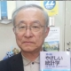

メンバー
- 鈴木利廣（代表）弁護士
-
70年も繰り返されてきた薬害、その防止システムづくりにはすべての関係者の対話と協働が不可欠だ。
- 水口真寿美（事務局長）弁護士
-
利益相反が浸透し、情報が操作されやすい今だからこそ、被害者の声に耳を傾け、真実を伝える活動が重要です。
- 別府宏圀（副代表）医師
-
リアルワールドデータという名の虚構、薬害を体験した人々は、その正体を見抜いている。
- 宮地典子薬剤師
-
高度な開発技術を駆使した新薬の嵐の中、医療現場は臨床試験場と化しています。
薬を使う前に、「効果は？ 副作用は？ 本当に必要？」と問いかけましょう。
- 片平洌彦臨床・社会薬学研究所所長、保健学博士
-

薬害問題解明の和英文著書出版の予定が、ＨＰＶ薬害問題に追われてＳＴＯＰ！過酷な被害を見つめ、わが身の「加齢」に鞭打つ！！日々です。
- 関口正人弁護士
-

ＨＰＶワクチンをめぐる『医療専門家』の言説を見るにつけ、健全な市民感覚による監視と、正しい情報発信の重要性を感じます。
- 寺岡章雄研究者・薬剤師
-
薬害が起きることなく、そして必要な薬が患者に役立つよう、薬剤師のひとりとして強く願っています。
- 野田邦子薬剤師
-
薬は誰のためのものか。人々の健康に役立つものであってほしい。それがなぜこれほど難しいのだろう。
- 三浦五郎薬剤師
-
病院薬剤師として悪戦苦闘しています。現場ならではの感覚を薬害防止活動に生かしてゆきたいと思います。
- 長田三紀情報通信消費者ネットワーク
-
一般的な消費者視点から薬害と取り組んでいきたいと思います。
- 隈本邦彦大学教員・ジャーナリスト
-
元テレビ局記者で、科学・医学ジャーナリズムに長く携わってきました。メディアの記者たちが、薬害被害者の立場に立って歴史の検証に耐える正しい報道をしてくれることを期待しています。
- 勝村久司高校教員・全国薬害被害者団体連絡協議会副代表世話人
-

漫然と被害が拡大した薬害の原因は薬ではなく、産官学による情報の隠蔽や不正操作です。薬をめぐる不健全なプロモーションや癒着を市民で監視し、薬害を防止していきましょう。
- 服部 功志弁護士
-
表裏両面から光を当てて初めて真実に近づきます。
隠されている医薬品の裏側に光を当て続けたいと思います。
- 打出 喜義産婦人科医
-

子宮頸がん死撲滅は衆人の願うところ。
この悲願を成就する為の最良は何か。
それが今われわれに問われている。
- 間 規子薬剤師
-
薬害根絶の思いをひとりでも多くの人と共有出来たらと思います。
地道に頑張ります。
- 戸井 千紘薬剤師
-
病院薬剤師です。薬害はなぜ繰り返されるのか？というところから、いまの医療のありかたに疑問を持ち始めました。知らないということはとても怖いことです。薬剤師として常に患者の立場で物を考え、透明性のある医療の実現をめざしたいと思っています。
- 堀 康司弁護士
-
同じ思いをする人をもう二度と出してほしくないという、薬害被害に遭われた方の願いが実現するように、活動していきたいと思います。